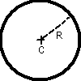

Sphère réfractante

Définition
Elle est définie par le centre C, le rayon R, et les indices
de réfraction.
La sphère peut être ajoutée:
- en cliquant sur le bouton de la barre d'outil ayant la forme ci-dessus,
puis en faisant un clic simple pour saisir le centre, puis en faisant un
clic simple quand la bonne taille est atteinte.
OU
- menu "Ajouter" puis "Système optique réel" puis "Sphère
réfractante". On donne alors les coordonnées du centre, et
la valeur du rayon.
Options
On peut imposer
- la couleur à l'écran de la pshère
- les indices de réfraction dans le bleu, le vert et le rouge;
par défaut, les valeurs 1,8 1,6 et 1,4 sont attribuées. On
peut aussi choisir directement un matériau dans une liste qui comprend
quelques verres, l'eau, et des plastiques optiques. Plus précisément,
les indices sont donnés pour les longueurs d'onde de référence
suivantes: 486,1nm, 587,6nm et 656,3nm. Pour modifier la liste des éléments
proposés, cliquer ici.
- les conditions d'existence d'un rayon réfléchi, dans le
sens entrant et dans le sens sortant; le rayon réfléchi peut
exister "toujours", "jamais", "seulement si le réfracté existe",
"seulement si le réfracté n'existe pas". Lorsqu'il y a
à la fois un rayon transmis et un rayon réfléchi, le
rayon réfléchi est un "rayon enfant", terminologie utilisée
dans la définition du rayon unique, de la
source ponctuelle, et de l'onde
plane.
Ces propriétés peuvent être rendues accessibles:
- à la construction de la sphère si on passe par le menu
"Ajouter"
- à tout instant en cliquant sur le bouton "Propriétés"
de la barre d'outil, puis en cliquant sur un des cercles bleus qui apparaissent
sur l'élément dont on veut obtenir les propriétés;
ne pas oublier à la fin de cliquer sur le bouton "Fin prop." de
la barre d'outil pour quitter le mode propriétés.
Divers
On peut demander que la normale au miroir soit tracée à
chaque point d'intersection d'un rayon lumineux avec cette sphère:
- menu "Options", vérifier que "Afficher les normales" est coché
OU
- dans la barre d'outil, boite à cocher "Normales"
On peut aussi demander que les angles d'incidence et de réfraction
soient affichés (en °):
- menu "Options", vérifier que "Afficher les angles" est coché
OU
- dans la barre d'outil, boite à cocher "Angles d'incidence et
de réfraction"
L'angle de réflexion n'est pas affiché, afin de ne pas
surcharger les représentations.
Le nombre de décimales sur les angles est fixé dans
la boite de dialogue des options des normales: menu "Options" puis "Options
des normales"
Retour à la page d'accueil